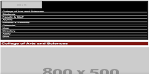

CSCE242: Web Applications
Adam Gerrard
Assignment 1 - Basic HTML

The purpose of this assignment was to get a feel for the basics of HTML. Different aspects were introduced and uploaded, such as: images, paragraphs, tables, lists, and links.
Assignment 2 - Basic CSS

The purpose of this assignment was to introduce style sheets and play around with different color schemes.
Assignment 3 - Page Layout

The purpose of this assignment was to format a webpage using Flexbot to mimic an example givin in class. To accomplish this, columns were introduced and implemented.
Assignment 5 - Recreate CSS Page
The purpose of this assignment was to format a webpage to look like one of South Carolina's webpages. This was accomplished by building off the previous assignment.
Project
Project Part 1 - Topic Description

The purpose of this assignment was to think of a topic for our project and describe what would be included within it.
Project Part 2 - Wireframes

The purpose of this assignment was to create wireframes for each page of our project website. We used MockITT to accomplish this.